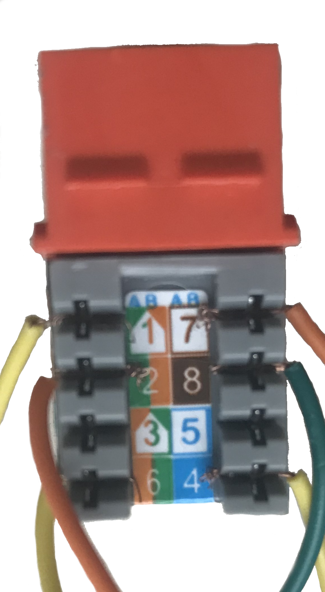

Wiring¶
Wiring Diagram¶
![digraph wiring {
splines="compound";
joystick [label=" ", fixedsize=true, shape=box, imagescale=true, image="images/handle.png", height=2.7, width=2.2, label="Joystick", labelloc=b, margin=0.22]
cableGND [shape=box, label=GND, style=filled, fillcolor=lightgray, fontcolor=black, fontsize=18, fontweight=bold]
cableTOP [shape=box, label=TOP, style=filled, fillcolor=lightgray, fontcolor=black, fontsize=18, fontweight=bold]
cableSDA [shape=box, label=SDA, style=filled, fillcolor=lightgray, fontcolor=black, fontsize=18, fontweight=bold]
unusedGreen [shape=box, label=unused, style=dotted]
cableSCL [shape=box, label=SCL, style=filled, fillcolor=lightgray, fontcolor=black, fontsize=18, fontweight=bold]
unusedBlue [shape=box, label=unused, style=dotted]
cableVCC [shape=box, label=VCC, style=filled, fillcolor=lightgray, fontcolor=black, fontsize=18, fontweight=bold]
cableTRIG [shape=box, label=TRIG, style=filled, fillcolor=lightgray, fontcolor=black, fontsize=18, fontweight=bold]
brownpair [shape=box, label="brown\npair", color=brown]
greenpair [shape=box, label="green\npair", color=green]
bluepair [shape=box, label="blue\npair", color=blue]
orangepair [shape=box, label="orange\npair", color=orange]
brownpair2 [shape=box, label="brown\npair", color=brown]
greenpair2 [shape=box, label="green\npair", color=green]
bluepair2 [shape=box, label="blue\npair", color=blue]
orangepair2 [shape=box, label="orange\npair", color=orange]
ethernet [label=" ", fixedsize=true, shape=box, imagescale=true, image="images/cablehead.png", width=2.7, height=2.2, label="Ethernet Cable Male", labelloc=b]
ethernetjack [label=" ", fixedsize=true, shape=box, imagescale=true, image="images/cablejack.png", height=1.2, width=2.4, label="Ethernet Jack", labelloc=t]
rpiTRIG [shape=box, label="GPIO\nTRIG", style=filled, fillcolor=lightgray, fontcolor=black, fontsize=18, fontweight=bold]
rpiTOP [shape=box, label="GPIO\nTOP", style=filled, fillcolor=lightgray, fontcolor=black, fontsize=18, fontweight=bold]
rpiVCC [shape=box, label="VCC", style=filled, fillcolor=lightgray, fontcolor=black, fontsize=18, fontweight=bold]
rpiSCL [shape=box, label="SCL", style=filled, fillcolor=lightgray, fontcolor=black, fontsize=18, fontweight=bold]
rpiGND [shape=box, label="GND", style=filled, fillcolor=lightgray, fontcolor=black, fontsize=18, fontweight=bold]
rpiSDA [shape=box, label="SDA", style=filled, fillcolor=lightgray, fontcolor=black, fontsize=18, fontweight=bold]
breadboard [label=" ", fixedsize=true, shape=box, imagescale=true, image="images/rpi.png", height=2.5, width=2.5, label="Raspberry Pi &\nBreadboard",labelloc=t]
edge [penwidth = 2.5, dir=both, arrowhead=none, arrowtail=none, lhead=none, ltail=true, splines=polyline] # black
joystick -> cableGND [label="sensor\nGND"]
edge [color=blue] # blue
joystick -> cableGND [label="buttons\nGND"]
cableSCL -> bluepair
bluepair -> ethernet
ethernetjack -> bluepair2
bluepair2 -> rpiSCL
edge [color="#a3a3a3"] # white
cableTOP -> brownpair
unusedGreen -> greenpair
unusedBlue -> bluepair
cableVCC -> orangepair
orangepair2 -> rpiTRIG
brownpair2 -> rpiTOP
edge [color=green] # green
joystick -> cableSDA
cableSDA -> greenpair
greenpair -> ethernet
ethernetjack -> greenpair2
greenpair2 -> rpiSDA
rpiGND -> breadboard
edge [color="#ff9900"] # orange
joystick -> cableSCL
cableTRIG -> orangepair
orangepair -> ethernet
ethernetjack -> orangepair2
orangepair2 -> rpiVCC
rpiVCC -> breadboard
rpiTOP -> breadboard
edge [color="#d9d926"] # yellow
joystick -> cableVCC
rpiSCL -> breadboard
rpiSDA -> breadboard
rpiTRIG -> breadboard
edge [color=red] # red
joystick -> cableTRIG
edge [color=brown] # brown
cableGND -> brownpair
brownpair -> ethernet
ethernetjack -> brownpair2
brownpair2 -> rpiGND
edge [color="#a3a3a3"] # white
joystick -> cableTOP
edge [color=black, arrowhead=vee]
ethernet -> ethernetjack
}](_images/graphviz-be0fbc50852b4e2b7f76738db2ee675e1dfbcf13.png)
Sensor¶

The sensor is fixed to the housing with hot glue.

A black female-ended jump wire is connected to the sensor’s GND pin.
A green female-ended jump wire is connected to the sensor’s SDA pin.
A yellow female-ended jump wire is connected to the sensor’s VCC pin.
An orange female-ended jump wire is connected to the sensor’s SCL pin.
The current wire for the top button is white.
The current wire for the trigger button is red.
The ground from the buttons is blue.
Joystick to Ethernet¶
The end of a cat-5e cable was removed, leaving one male end. The cable was stripped to expose the four braided wires, 8 wires total.
The ground from the sensor and the ground from the buttons were soldered together, then soldered to the brown cable in the brown twisted pair.
The white current wire from the top button was soldered to the white cable in the brown twisted pair.
The green SDA wire was soldered to the green cable in the green twisted pair.
The red trigger button current wire was soldered to the orange cable in the orange twisted pair.
The yellow VCC wire was soldered to the white wire in the orange twisted pair.
The orange SCL wire was soldered to the blue wire in the blue twisted pair.
The white wires from the green twisted pair and the blue twisted pair were not used.
The spliced wires were wrapped in electrical tape to secure them during use.
Ethernet Jack to PI¶
The cable used was a commercial cable so the secondary (right-hand) indicators of cable coloring on the jack were used, as specified in “Wiring Scheme B” of the instructions. For example, port 1 is the white wire of the orange twisted pair, not the white wire of the green twisted pair.
Ends of jump wires were stripped and terminated in the jack using the included plastic punch-down tool.
Terminal 1 corresponded to the white wire of the orange twisted pair in the cat-5 cable. This was the Trigger Button line and was wired to a GPIO pin on the Pi breadboard with a yellow wire.
Terminal 2 corresponded to the orange wire of the orange twisted pair in the cat-5 cable. This was VCC and was wired to the 3.3v VCC pin on the Pi breadboard with an orange wire.
Terminal 3 corresponded to the white wire of the green twisted pair in the cat-5 cable. This was unused.
Terminal 4 corresponded to the green wire of the green twisted pair in the cat-5 cable. This was SDA and was wired to the SDA pin on the Pi breadboard with a yellow wire.
Terminal 5 corresponded to the white wire of the brown twisted pair in the cat-5 cable. This was the Top Button line and was wired to a GPIO pin on the Pi breadboard with an orange wire.
Terminal 6 corresponded to the brown wire of the brown twisted pair in the cat-5 cable. This was Ground and was wired to a ground pin on the Pi breadboard with a dark green wire.
Terminal 7 corresponded to the white wire of the blue twisted pair in the cat-5 cable. This was unused.
Terminal 8 corresponded to the blue wire of the blue twisted pair in the cat-5 cable. This was SCL and was wired to the SCL pin on the Pi breadboard with a yellow wire.
Because wire supply limitations did not allow for color-coding all the wires, labels were affixed to each wire coming out of the jack so they could be correctly plugged in to the Pi.

{kind=link}